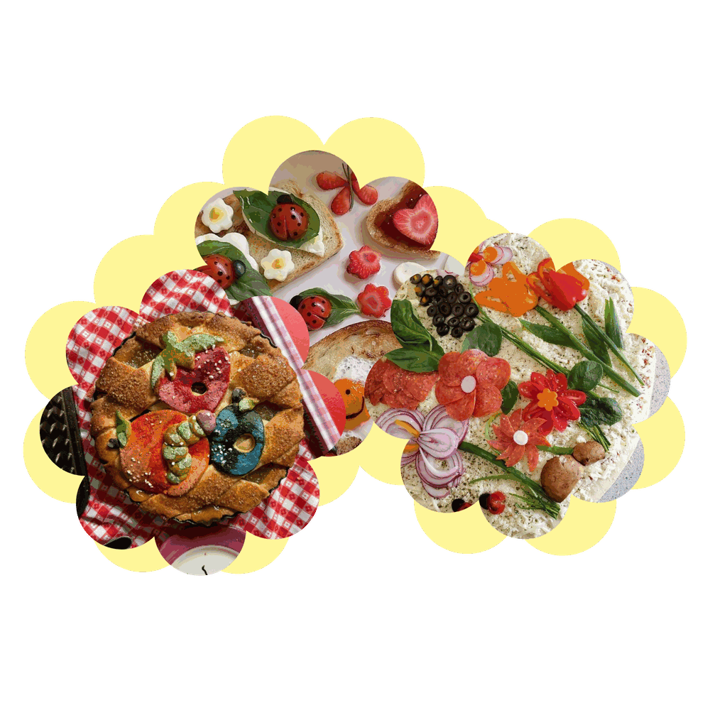
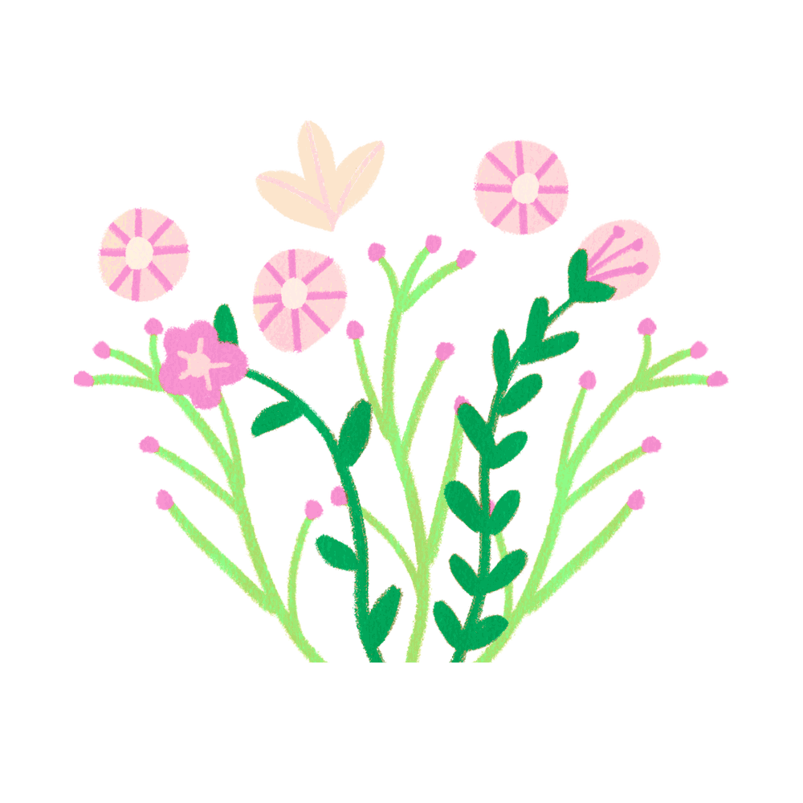
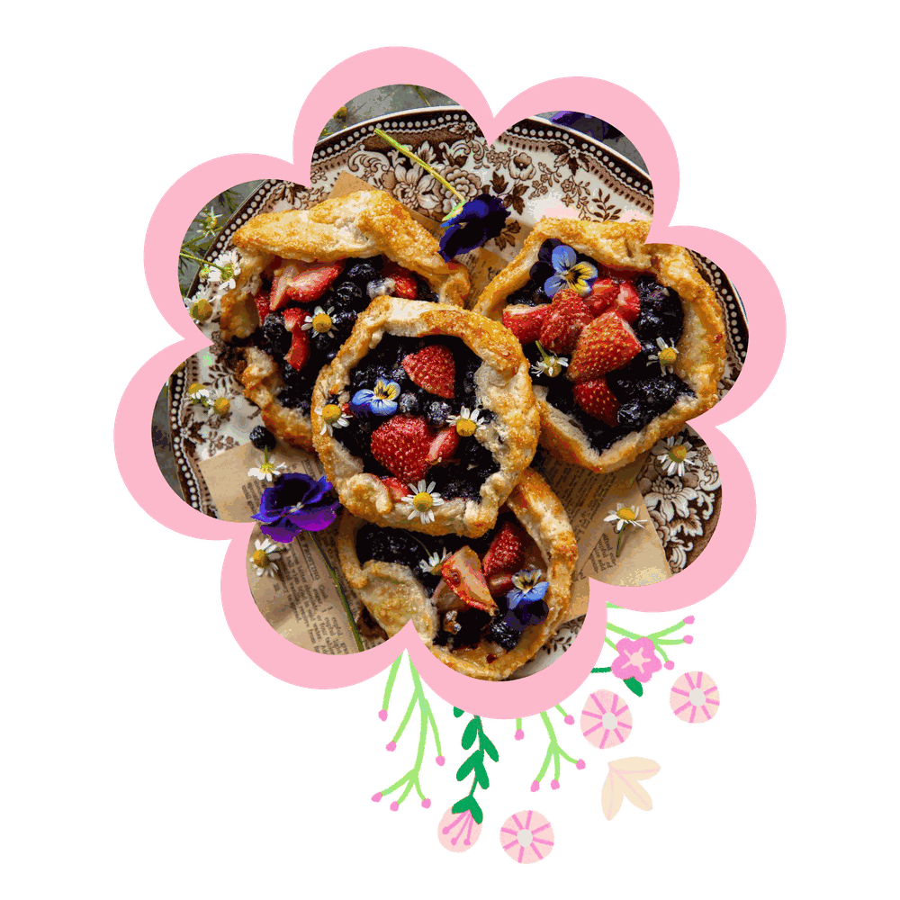

Discover whimsical recipes inspired by enchanted forests, fairy tales, and cozy kitchens.
GET STARTED
The place where every recipe begins with a little magic.

"If more of us valued food and cheer and song above hoarded gold, it would be a merrier world."
-J.R.R Tolkien, The Hobbit


From cozy feasts in charming cottages to magical dishes served in faraway realms, explore the food that makes fantasy worlds feel alive and bring a little bit of that wonder into your own kitchen.
Discover the recipes, meals, and flavors hidden inside the stories you love.
DISCOVER

Welcome to Fairy Cooking, a magical place where fantasy and cooking come together. We are a team of four Communication and Advertising students who created this project to share our love for storytelling, creativity, and delicious food.
Inspired by enchanted forests, fairy tales, and the cozy worlds of fantasy literature, we designed Fairy Cooking as more than just a recipe website. Every recipe is created to bring a touch of magic into the kitchen and turn everyday cooking into a memorable experience.
Whether you're preparing a quick breakfast or baking a sweet dessert, we hope our recipes inspire you to explore, create, and enjoy every moment in the kitchen because every meal is better with a little magic.